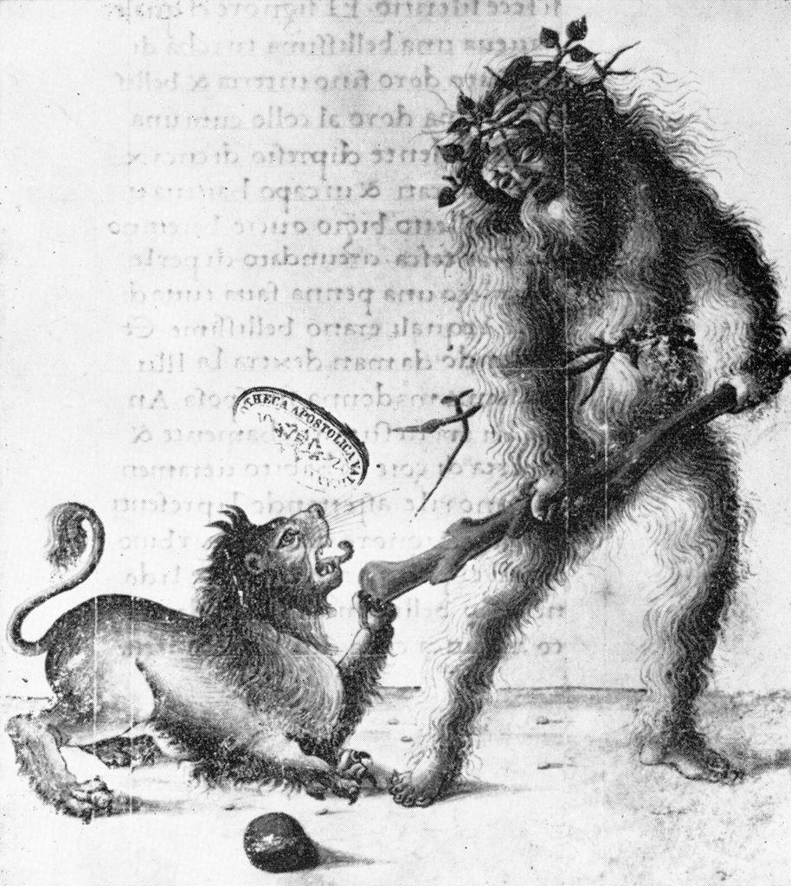
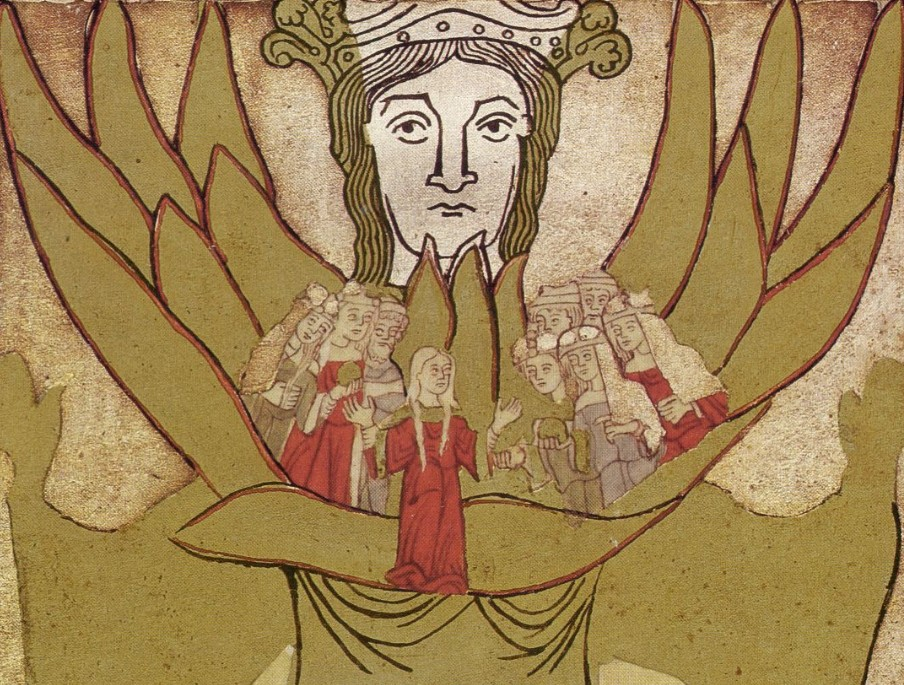
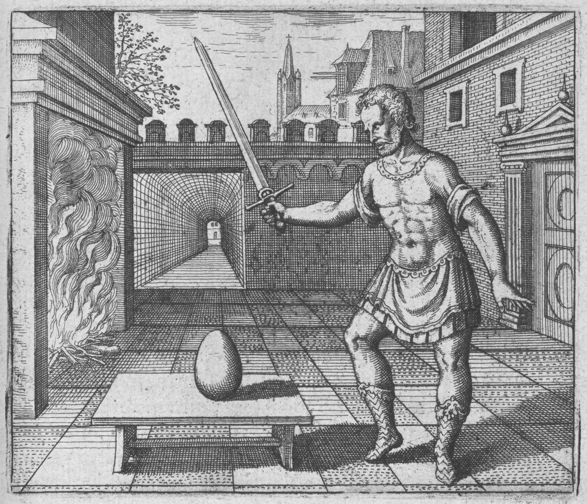

Part I: Fallenness
While documenting suicide in early modern Europe, George Minois declared that the period from 1580 – 1620 was ‘the first crisis of conscience’1. Times of crisis obliged a response, and contemporary Christian thinkers occupied the vanguard. A search of the Early English Books Online2(EEBO) catalogue offers a few 'hard numbers' to get a feel for the magnitude of their efforts: ~4000 of the ~6,500 books published throughout these 40 years were religious texts. Sermons, polemics, and doctrinal tracts make up a substantial portion of this number, and the sermons alone account for ~10% of all printed books published in England since the introduction of William Caxton’s printing press in 1476.
The codification and development of the modern English tongue saturated the same period. Beginning with Bullokar’s Pamphlet for Grammar in 15863—the first such codification of its kind—there was soon after published The Art of English Poesie (1589)4, the first English dictionary, Robert Cawdrey’s Table Alphabeticall (1604)5, the works of William Shakespeare (~1592-1609)6, and the King James Bible (1611)7. This was certainly a time of linguistic and intellectual change in England.
Cawdrey’s Table Alphabeticall proves that, at the turn of the 17th century, the word “madness” already designated an illness of the mind8. However, as with illnesses generally, madness was interpreted through the lens of providence: God had the final word over sickness and health9. Though medical knowledge was sanctioned and made lawful use of, recovery and wellbeing were about piety as much as pathology10. A respected physician of the soul, Richard Greenham11 articulated this with brevity in a 1612 treatise:
“madness is impatiencie of minde, or else the sudden wrath of God upon a man.”12
Iain MacKenzie's brilliant exegesis, Gods Order and Natural Law, is essential for making sense of 'Laudian' thought13: but note that Laudians, like Hermeticists, only exist retrospectively. Archbishop of Canterbury, William Laud (1573 – 1645) is the eponymous figure of a movement which emerged from Calvinism in the early 17th Century, though Mackenzie employed a broader-than-usual definition when invoking him. Typically, Laudians are narrowly identified as the Old High Churchmen opposed to radical Puritanism. For Mackenzie, the Laudianism names a milieu throughout the Elizabethan, Jacobean, and Caroline periods for whom the concept of order was the central theological principle14, and even identified with Christ himself. In the words of a Durham-born clergyman, Francis Mason:
“Order proceedeth from the throne of the Almightie, it is the beautie of nature, the ornament of Arte, the harmonie of the world.'”15
This new theological trend asserted that the fallenness of the world was precisely its disorderedness—that fallen is a synonym for disordered, if you will—, and hence, that salvation naturally consists in its reordering.
One natural consequence of this theological move was a pointed interpretation of madness. Already understood as mental disorder, madness was no longer a neutral affliction; it was a manifestation of the fallen world.
A modern reader might insist that the early modern concept of madness, or any theological descriptions of it are irrelevant with regards to modern medical categories covered by the banner of 'mental disorders'; this is, however, not the case. Theologians were not confused about the distinction between sinfulness and mental illness, nor did they appropriate pathological mental affliction as a metaphor for some spiritual equivalent. The concrete realities of medicine and society had been understood in theological terms for centuries. Scientific and technical understanding of illness existed and, moreover, was considered legitimate, but according to every intellectual authority, these fields were subordinate classes of knowledge. All 'naturalist' explanations ultimately answered to spiritual law16.
The Laudian divines were highly articulate, and offered a wealth of material conceptualising the relationship between madness and fallenness. This essay is an investigation of these concepts. Having read widely within the sources, I present here a selection of the most revealing quotations, and extract from them a set of common motifs. This hermeneutic work is supported by some social-historical analysis of the Laudians and their world.
Following the historiographic recommendations of Curry17 and Ginzburg18 (to name but two), a significant portion of this essay is devoted to anthropological clarity and contextualisation, making effort to take the culture on its own terms. When reading texts like these—'unelightened', passionately soteriological—it is all too easy to be retrospectively dismissive, patronising, reductionist and anachronistic19. Though at times I have expressed disagreement at a particular view, I have done so earnestly; and where at times I might make a pointed remark, I have done so in the spirit of intellectual raillery. I do, however, maintain full respect for these texts and their authors.
Madness, Religion, and the State
Understanding the relationship between God's order and madness as a soteriological matter was not just recreation for cerebral types. But what exactly were the practical ramifications? How great of a concern was madness, relatively speaking? Laudians certainly mention the mad a fair amount in their writing, but was this just for effect? How did the representation of the insane by lofty Oxford gruaduates influence the mad in society, if at all? Did this changing discourse, for all its conceptual weight, tend toward attitudes of condemnation, or rather towards sympathy for the afflicted? Who was considered 'insane' in the first place, and why?
David Lederer’s study Madness, Religion, and the State is important to mention at this point, since it is one of the most persuasive cases for why these questions matter to the history of mental illness. Lederer broached an intellectual boundary which more science-oriented (some might say triumpalist) scholars have tried to preserve: the boundary between spiritual physic—the pastoral treatment of afflictions through prayer, confession, counsel, etc—and modern psychiatry. To be clear, Lederer endorses the hard angle on this; that spiritual physic is psychiatry itself; not simply in kind, but, as a concrete legislative, societal, intellectual and cultural inheritance20. If he is correct, heed must be taken of Feuchtersleben’s remark—that psychiatry can “by no means… render a knowledge of previous opinions superfluous”21—;since historians would then be mistaken to throw away everything but the physicians. This is the rationale, and also the intellectual desert, in which serious readers of Early Modern clergy must work: with writers whose accounts helped shape the ground on which later psychiatric distinctions were made.
Though Lederer’s research dealt exclusively with the Bavarian clergy, it is not without relevance to the England of the Laudian reforms. Spiritual physic was not confined to Bavaria, as noted by Harley22. But more importantly, the adoption of European humanistic values had had profound effects. Inspired by the image of God-as-shepherd, clergy had idealised pastoral duties with renewed vigour during the 16th Century; a fact emblematised by the inscription on the crosier of the Bishop of Carlisle (d. 1616), “For correcting, feeding, watching and directing”23.
This clerical claim to “correct and direct” the polity, including the insane, is functionally indistinguishable from the modern claim of psychiatry24. Additionally, given that physicians were scarcely more sophisticated than prescribing phlebotomy and vomitives, intellectual historians should consider to what extent it is justified to privilege medicine above ecclesiastic pastoral care when documenting psychiatry’s antecedents in the early modern period25.

Part II: Intellectual Norms
As an almost universal rule, the writers consulted here were Oxford or Cambridge Alumni. They were educated in a curriculum which had remained unchanged since the 14th century. Scholarship was limited to only five subjects, each tiered into two ranks. The complete list of qualifications is as follows:
- Bachelor and Master of Arts
- Bachelor and Doctor of Divinity
- Bachelor and Doctor of Civil Law
- Bachelor and Doctor of Medicine
- Bachelor and Doctor of Music
The Faculty of Arts stood for something different in the Middle and Early Modern academy. If we were to force a comparison between the academy then and now, in some sense the arts degrees were closer to a modern science degree than what we would now call the arts. The cause for the confusion is the curriculum known as the seven liberal arts, a heptad of disciplines arranged in two parts:
- The Trivium (Verbal): Grammar, Logic, Rhetoric
- The Quadrivium (Mathematical): Arithmetic, Geometry, Music, Astronomy
This rigid sevenfold format lent the arts authority as an elegant, ordered whole rather than a bundle of subjects. Furthermore, the disciplines were broader than their modern counterparts. Grammar was not simply punctuation and syntax but the discipline of interpreting authoritative texts, and arithmetic was not just mathematical problem solving but an introduction to cosmic order.
Since 1313, knowledge of the seven liberal arts had been mandatory for graduation from any of the degrees (including Divinity). One of few changes over the centuries was a 1450 statue ordered special attention was to be paid to the art of rhetoric—Boethius, Donatus, pseudo-Cicero, Aristotle—a fact which reflects the growing importance of ‘disputation’ (persuasive debate) for pedagogy.26 Participating in formal disputations was essential if a student was to achieve the higher qualifications.
A doctorate in theology required more-or-less a decade of study and consisted of an “unchanging corpus of texts that were standard across Europe”27. Brockliss notes that “university was not a research institution pushing forwards the frontiers of knowledge but an arm of the church in its struggle to create unity, uniformity, and good order”28. The homogeneity of views expressed in the sources are consistent with this idealisation of uniformity.
An important feature of the curriculum of liberal arts is its emphasis on rationality, elegance of proof, and measurement—both in terms of measuring and being measured. This had been articulated as early as the thirteenth century;
“among them Arithmetic and Geometry being more noble for in making of the world, God disposed all things in measure, number, and weight.”29
Mooney notes that a preparatory study of “mathematically derived notions”30 was followed by a mathematical “handling [of] complex theological problems”31. This ‘Pythagorean’32 education was sharpened under a practice of disputation, measured against an Aristotelian criterion of wisdom, moral virtue, and goodwill.
In light of the source materials, I suggest that the curriculum produced a uniform and limited set of intellectual norms biased toward a refined sense of logic, cosmic harmony, and rhetorical elegance. Contemporary intellectuals were selected against this criteria. The representation of alterity, including madness, was quite possibly shaped by an indirect prejudice toward order and reason in the academies. By promoting emotionally restrained articulation, clarity of speech, and rationality the education system implicitly devalued disorder, unintelligible speech, emotional excess and irrationality.

Part III: The Text
Thomas Adams and Mystical Bedlam
That pastoral concerns flourished is best demonstrated by Thomas Adams (1583–1652), author of a seminal Christian treatise on madness, Mystical Bedlam. His public and published sermons had struck such a chord within Calvinist hearts that he earned considerable success from humble beginnings. As vicar of Willington he published many works including Mystical Bedlam, and shortly after was granted two parishes in London, including St. Benet Paul’s Wharf, the official church to the College of Arms. Being in such good employment was likely related to his service as chaplain to Henry Montagu, a man of exceptional influence—Viscount Mandeville, Earl of Manchester, High Treasurer, Chief Justice, President of the Privy Council, Lord Privy Seal, and member of the Star Chamber. The dedications in Adams’ published works would suggest he kept relationships with several other figures of high stature, such as Lord Chamberlain William Herbert, 3rd Earl of Pembroke33.
The timing of Adams’ promotion to rector St. Benet Paul’s suggests his published works had earned him notoriety: at the very least they did him no harm. Historians have overlooked the content of his sermons; though acknowledged for his literary brilliance, I know of no detailed scholarship on them.
Adams’ proposed a ‘cardiocentric’ theory of madness—a deeply Aristotelian notion34—; though the mind is indeed the seat of reason, the heart is, for Adams, the vital root, or existential core of the person, superior to the brain by virtue of it being the site at which heaven and earth, soul and body are united.
“As man is Microcosmus, an abridgement of the world, he hath heaven resembling his soul: earth his heart”35
The heart is a vessel able to contain supra-mundane objects, and therefore, for the impure, it is also the theatre of war with the Devil.
“The Heart is the chief Tower of life to the body, and the spiritual Citadel to the whole man: always besieged by a domesticall enemy, the Flesh: by a civil, the world: by a profest, the Devil.”
For this reason, Adams understands it to be an aperture through which madness propagates; it is, in a concrete sense, diabolic contamination of the heart.
“How mad is that man that would have all his vessels good, but not his own heart! We would have a strong nerve, a clear vein, a moderate pulse, a good arm, a good face, a good stomach, only to care not how evil is the heart, the principal of all the rest.”36
“[The heart] is a spiritual vessel, made to contain the holy dews of grace, which make glad the City of God. It is ever full, either with that precious juice, or with the pernicious liquor of sin.”37
He delineates 20 types of mad-men, intentionally broad with his brush-strokes it seems, to demonstrate the applicability of his theory to all manner of sins. The types of madmen are listed are as follows; the epicure (gluttony), the proud, the lustful, the hypocrite, the avarous (or avaricious), the usurer, the ambitious, the drunkard, the idle, the swearer, the liar, the busy-body (gossip), the flatterer, ingratitude, the angry, the envious, the contentious (argumentative), the impatient, the vainglorious, the Papists38.
Taken at face value this list is entirely polemical, but a close reading of his text reveals that the accusation of madness is not for effect. Adams postulates a causal, proto-psychological theory consistent with theology, presenting madness as a disorder of faith, will, and character, and uses these types as the backbone of the theory. Adams goes to great effort to articulate that the drunk, or the Papist were not just being insulted, but clinically diagnosed as insane. Samuel Smith, the horoscope of whom survives in a 16th century parish register of baptisms39, similarly described madness as ubiquitous and cardiocentric his eschatological sermon, The Great Assize:
“What wonderful madness hath bewitched the hearts and souls of almost all men and women in the world?”40
If we contrast Adams’ typology with those in Richard Napier’s casebooks41 we do not find common ground. Faced by these differences one might be inclined to attribute them to a difference in expertise; Adams’ categories are not those of a physician because he is not one. Consider though, the statistical differences in prevalence, symptom severity and help-seeking behaviour reported by modern medicine, of which these differences may be an Early Modern analogy. Modern medical research is motivated to reduce the economic burden of illnesses and allocates its resources accordingly42. Pastoral institutions in the Early Modern period did not share this orientation, and hence what afflicted the laity may not necessarily have been primary concerns for the authorities.
At times, Adams’ psychology is sophisticated and consistent with 19th or even 20th century authorities on the topic:
“1. There are some madmen that can rightly judge of the things they see, as touching imagination & fantasy: but for cogitation and reason, they swerve from natural judgement.
2. Some being mad, are not deceived so much in common cogitation and reason; but they err in Fantasy and Imagination.
3. There are some that are hurt in both imagination and reason, and they necessarily therewithal do lose their memories. That whereas in perfect, sober, and well composed men, Imagination first conceives the forms of things, and presents to them the reason to judge; and reason discerning them, commits them to Memory to retain: in madmen nothing is conceived a-right, therefore nothing derived, and nothing retained.”43
Resemblences to early psychology fail at the point which illness becomes metaphysical. Modern sciences abstain from asserting metaphysical notions—i.e., ultimate explanatory models of meaning for ‘disorder’—; Adams, by contrast, is transparently metaphysical. When considering that contemporary medical knowledge entertained ideas about humoral medicine, it seems a fair concession that metaphysical notions of the soul should not warrant a complete dismissal of the importance of Adams’ psychological writing, which would otherwise be considered sophisticated for the time.
On Privation and Punishment
Madness is both a rhetorical and descriptive term in the sources. Clergy denounced sin, impiety, and a host of other matters of poor conduct as ‘mad’. Occasionally these appear to be simple insults, but a more articulate case is sometimes presented which justifies the hostility in terms of privation. The ‘Prince of Puritans’, William Perkins writes in a chapter titled ‘Madnes a punishment of Sinne44’:
“It is gross ignorance and madness in men to reason so against Gods decree…we have occasion here to consider the wonderful madness and forgetfulness that reigneth everywhere among men, which only have regard to the estate of this life, and cast all their care on this world, and never so much as once dream of the joyful and blessed estate which is prepared for Gods children in the highest heaven.”45
Mystical Bedlam again provides the best example for how these terms were even mutually constitutive:
“Faith is the Christian man's reason: now on the privation of reason must needs follow the position of madness...The vanguard of that accursed departing rabble, the ringleaders of the crew that dance to hell, are unbelievers.”46
Since faith is the proper mode of reasoning, then impiety is an absence (or what Adams calls the privation) of reason. To be deprived of reason—to be mad—is tantamount to non-belief. For Adams, absence of reason is not a neutral confusion, but a ‘dance to hell’; in other words, deserving of punishment, harm, and correction. Thomas Bilson, Bishop of Winchester, expressed this dance to hell at length in quite chilling prose:
“the Justice of God arising to take final vengeance of their [viz. the wicked] rebellion against him, causeth extreme and inward shame, remorse and fear, which they so much shunned, when they might have repented, and desisted from their evil ways, most dreadfully to invade them, and as mighty streams to overwhelm them, till they sink to the bottom of all confusion… a most just reward of their dalliance with God, and yet a most painful torment to the damned, who in their life time wilfully renounced God, to enjoy their delights; but there and forever after shall without remedy or mercy behold the loathsomeness of their sins, and grieve at the folly and fury of their disobedience; God punishing the soul of every such transgressor with the remembrance and remorse of his madness, with the evidence and conscience of his uncleanness, and with the sight and assurance of his perpetual wretchedness.”47
The Mad-Blind Motif
Blindness was often introduced as a companion term to clarify the nature of privation. These twin cognitive shortcomings are to be reckoned with, say the clergy, if one is to fulfil their responsibility to God and ultimately to achieve salvation. Blindness here is, of course, not to be taken literally, but as flawed cognition and ignorance of certain facts. John Moore, another upwardly mobile member of the clergy who rose from humble beginnings in Devon, delivered this motif in beautiful prose:
“O that the Lord would open all our eyes, that in this glass we might behold our estate! What, are we all but grass? and shall we wither like hay? Alas, we cannot so persuade ourselves, for (if we could) it would pluck down our pride, and lay our lofty looks: it would then reform our disguised ruffes, and make our monstrous attire more modest: it would mitigate our madness, and make us humble minded: we would then throw down ourselves (with Abraham) and say to God, we are but dust.”48
Blindness and madness are partnered in such a way that “if the Lord would open all our eyes… it would mitigate our madness”. Pride, vanity, and insolence are what constitute this madness; qualities best understood in this Christian context as examples of spiritual privation.
“...neither will God be defective in his method, for from these more sensible torments upon the body, he will proceed to greater judgements upon the soul, which though least felt, yet more fearful; madness, blindness, astonying of heart, with all their ill consequents; to grope at noon day, to be oppressed, poled, and without all succour.”49
Anthony Cade, who mentored and later received patronage from the royal favourite, George Villiers50, often made use of the mad-blind motif, and diagnosed them as necessarily comorbid:
“He that seeks not for delivery from this body of death, either he feels it not, or is exceedingly besotted in love with his own sickness: either he is blind, and sees not his estate: or seeing it, is mad, that seeks not to relieve it at least if he feel his evil, and the danger of it, either blindness or madness possesseth him, But indeed no man can be so mad, except he be first blind: blinded with the custom of sin, that makes us unsensible: or with the prince of darkness that lulls men asleep with the pleasures of sin.”51
I have tried to provide a representative sample of the major tropes/motifs which appear in the corpus. They operate on two registers; the rhetorical and the theoretical. When used as an insult or rhetorical device, there is little to comment on. When used theoretically, there is a clear pattern of motifs, with madness being repeatedly framed as comorbid with ‘blindness’; as contamination, at times diabolical; as ubiquitous; finally, as privation and ‘distance-from-God’ itself.

Part IV: Conclusions
Ecclesiastical authorities did indeed speak of madness as a manifestation of spiritual privation. The textual evidence suggests that some thinkers even defined madness as the universal condition prior to ones’ salvation. This is consistent with the secondary sources on the character of contemporary medical and theological knowledge. Condemnation was not arbitrary, but revealing of the ‘cosmic’ importance bestowed on madness. It logically followed from Laudian theological commitments—and I argue that this may be a symptom of the liberal arts curriculum—that ‘disorders of the soul’ diametrically opposed the “the oikonomia of God, the order which God is in Himself in His Triune Being”52. Polemical roughness, too, is not entirely arbitrary but a ‘mnemotechnic’ practice of correction53; a compassionate, albeit misguided, effort to deliver souls into heaven.
Anthropologist Edward Tiriyakian noted “a social order is organized around the knowledge of reality which is shared and accepted by a majority of its members”54. The shared reality of the period 1580-1620 C.E, though certainly not uniform, was constructed within an educated class of religious leaders split between two major dogmas; soteriology and the ratiocination and rationalism of the seven liberal arts55. Embodiment of a non-ratiocinating, illogical modus operandi—namely, madness—was necessarily perceived negatively, and at odds with the contemporary social project. Madness was conceptualised as internal contamination or privation (of low/negative value), and therefore satisfies Wakefield’s criteria56 for mental disorders. The construction of such a concept legitimised custodial care as a form of control over “odd cases that cannot be adequately handled… in everyday life… that simultaneously do not… rise to the level of legal culpability”57. This strategy satisfied the moral and soteriological ambitions of the humanist, Christian values of the clergy, and likely the educated class as a whole, which had become ‘mainstream’ during the early 16th century58.
An argument can be made that secular, scientific paradigm is fundamentally at odds with theology, and to investigate early modern theological attitudes to mental health is inconsequential with regards to our contemporary discourse. Such a perspective fails to address Spinoza’s criticism, by assuming that modern persons are willing and able to hold cogent, secular, reasoned views59; and Zizek’s criticism, by assuming that critical thinking emancipates agents from the habits of normative culture and its dogmatic reflexes60. The reality is that only specialists can claim to have such an emancipatory mastery of knowledge—the great majority of society inherit views or form them within cultural constraints which do not necessarily demand the rigour befitting a scientist, and hence Lederer’s charge that modern attitudes—unsurprisingly—have ancestors in the early modern period61.
The most obvious evidence to back Lederer’s claim in the primary sources would be the value placed on ‘order’, betraying the fact that ‘disorder’ is still a means by which psychiatry represents the character of its patients’ suffering. Another oddity reported by Lederer is the fact that the title ‘Psychiatrist’ was first used as a Greek epithet for Jesus62. The fact that certain non-secular details persist, and that certain attitudes toward the insane appear long before any scientific understanding, suggests that they are not entirely derived from recent medical discoveries. It is unclear if these are early modern residues being redescribed in modern terms, or independently drawn conclusions which supposedly superstitious clergy were able to parse through sheer discourse, or more shockingly still, from the Bible. It is also important to note that the appearance of these attitudes in an early modern theological context is not evidence that they are a product of it. Representations of this sort, or bearing some resemblance to them, may have been embedded in the wider culture for an indeterminable duration.
The clergy were, according to the dictionary definition, esoteric63; an exclusive, Latinate community educated in a highly specialised body of knowledge, disseminated via a curriculum, within which access to information was restricted according to a promotion system64. Some of the authors here cited speak as if madness is synonymous with not belonging to this humanist-clerical ‘esoteric’ order; interpreted from within the twin logic of Scripture and humanist liberal arts, madness was conceptualised as the opposite of the capacities cultivated by clerical-humanist education. Somewhat conveniently, sanity and salvation are defined precisely as an absence of the ‘order’ and discursive elegance embodied by the major institutions and their ideals.
Clerical claims to pastoral authority were justified insofar as they were consistent with these Biblical and intellectual norms. It is not important whether these norms were authentic, internalised beliefs or simply performative; the authenticity of an attitude is not as important as how it structures intellectual discourse and, in turn, produces knowledge and representation of alterity.
It is my argument that intellectual norms shaped standards of ‘discursive validity’–what ideas were considered valid or cogent–; and did so in such a way that they were structurally prejudiced against alterity, in particular against the disordered, reproachful, inarticulate ‘mad-man’. That the devaluation of madness was a consequence of such norms seems a compelling possibility.
Falsifying such a position is fraught with philological and historiographic difficulty. Similar studies of regional variations, inside and out of the Anglican sphere, as well as beyond Christendom altogether are needed to verify such claims, since there is a possibility that these attitudes were not peculiar to England, and therefore of diminished importance with regards to the evolution of psychiatry. There seems to be at present, however, a curious ambivalence with regards to research of its antecedents, likely a symptom of disciplinary limitations; as the subject approaches this theological era, a new set of skills is required not as readily available to modern historians. I propose further interdisciplinary study, combining history, philology and philosophy in other settings to further unpack the question of madness as a cultural, legal, and medical phenomenon.
1 Georges Minois and Lydia G. Cochrane, History of Suicide : Voluntary Death in Western Culture (Johns Hopkins University Press, 2001). Paraphrased in David. Lederer, ‘On the Soul’, in Madness, Religion and the State in Early Modern Europe : A Bavarian Beacon (Cambridge University Press, 2006). ↩
2 ‘About -Early English Books Online’, ProQuest, accessed 19 May 2026, https://www.proquest.com/eebo/productfulldescdetail? ↩
3 Terttu Nevalainen and Ingrid Tieken-Boon van Ostade, ‘Standardisation’, in A History of the English Language, ed. Richard Hogg and David Denison (Cambridge University Press, 2006), Cambridge Core, https://doi.org/10.1017/CBO9780511791154.006. p. 284. ↩
4 Nevalainen and van Ostade, ‘Standardisation’. p. 306. ↩
5 Nevalainen and van Ostade, ‘Standardisation’. p. 302. ↩
6 Peter Holland, ‘Shakespeare, William (1564–1616), Playwright and Poet’, Oxford University Press, August 2021, https://doi.org/10.1093/ref:odnb/25200. ↩
7 Jenny Wormald, ‘James VI and I (1566–1625), King of Scotland, England, and Ireland’, Oxford University Press, September 2014, https://doi.org/10.1093/ref:odnb/14592. ↩
8 Robert Cawdry, A Table Alphabeticall of Hard Usuall English Wordes. (London, 1604), 2240893502; 1062:01, Early Modern Collection, https://uoelibrary.idm.oclc.org/login?url=https://www.proquest.com/books/table-alphabeticall-conteyning-teaching-true/docview/2240893502. ↩
9 “For God there were no accidents; sickness did not come by chance but was sent as a fatherly correction by God either to punish human wickedness or as a trial of faith.” David Harley et al., Spiritual Physic, Providence and English Medicine, 1560-1640, 1st edn (Routledge, 1993), 101–17, https://doi.org/10.4324/9780203632949-6. p. 101. See also, J. Schmidt, Melancholy and the Care of the Soul (London), 2007, 8–19. ↩
10 “There was no conflict with natural explanations, but the faithful should remember that God's providence was the first cause of all afflictions, calling sinners to repentance:” David Harley, ‘Medical Metaphors in English Moral Theology, 1560–1660’, Journal of the History of Medicine and Allied Sciences 48, no. 4 (1993): 396–435, JSTOR. p. 402. ↩
11 Eric Josef Carlson, ‘Greenham, Richard (Early 1540s–1594), Church of England Clergyman’, Oxford University Press, September 2004, https://doi.org/10.1093/ref:odnb/11424. ↩
12 Richard Greenham, The Workes of the Reverend and Faithfull Servant of Jesus Christ M. Richard Greenham, Minister and Preacher of the Word of God Collected into One Volume. (Thomas Snodham and Thomas Creede, 1612). https://www.proquest.com/docview/2248509894/citation/A80BBCCAA2904E71PQ/2. ↩
13 “'Laudianism' I see as an insistence common not only to the seventeenth-century divines contemporary with Laud, but that which pervades the works of the divines of the Elizabethan, Jacobean and Caroline church.” I. M. MacKenzie, God’s Order and Natural Law, 1st edn, The Works of the Laudian Divines (Routledge, 2002), https://doi.org/10.4324/9781315190136. p. 2. ↩
14 “I interpret 'Laudianism', not as a phenomenon within one generation, but as an emphasis within the Church of England - an ongoing trend - with an insistence on 'order' which finds its climax in Laud and his contemporaries.” MacKenzie, God’s Order and Natural Law. p. 3. “The concept of 'order' undergirds the theology of the Elizabethan, Jacobean and Caroline Divines.” MacKenzie, God’s Order and Natural Law. p. 37. ↩
15 “The method which the theologians, whose works are considered in what follows, employed, is the entrance into their insistence that Christ is Himself Order. This theological method was itself orderly and regarded as part of the order which the Church must observe.” MacKenzie, God’s Order and Natural Law. p. 23. “This is true of Patristic observations on the oikonomia [note: meaning ‘administration’] of God, the order which God is in Himself.” MacKenzie, God’s Order and Natural Law. “Order proceedeth from the throne of the Almightie, it is the beautie of nature, the ornament of Arte, the harmonie of the world.'” Francis Mason: The Authoritie of the Church in Making Canons and Constitutions Concerning Things Indifferent, 1607 edn, p.11. ↩
16 “Nothing is mundane, nothing merely secular. Everything has significance within the Divine purpose and destiny.” MacKenzie, God’s Order and Natural Law. 'The conception of order… must have been common to all Elizabethans of even modest intelligence.” E. M. W. Tillyard, The Elizabethan World Picture (Pimlico, 1998). p. 10. ↩
17 Patrick Curry, ‘Horoscopes and Public Spheres’, in Essays on the History of Astrology, ed. Günther Oestmann et al. (De Gruyter, 2005), https://doi.org/10.1515/9783110925128.261. p. 265-268. ↩
18 Carlo Ginzburg, The Cheese and the Worms: The Cosmos of a Sixteenth-Century Miller (The Johns Hopkins University Press, 2013). ↩
19 Curry, ‘Horoscopes and Public Spheres’. p. 268. ↩
20 David. Lederer, ‘Introduction’, in Madness, Religion and the State in Early Modern Europe : A Bavarian Beacon (Cambridge University Press, 2006). ↩
21 German E. Berrios, ed., ‘Matters Historical’, in The History of Mental Symptoms: Descriptive Psychopathology since the Nineteenth Century (Cambridge University Press, 1996), Cambridge Core, https://doi.org/10.1017/CBO9780511526725.003. p. 8. ↩
22 David Harley et al., Spiritual Physic, Providence and English Medicine, 1560-1640, 1st edn (Routledge, 1993), 101–17, https://doi.org/10.4324/9780203632949-6. ↩
23 Kenneth Fincham, ‘The Model and the Men’, in Prelate as Pastor: The Episcopate of James I, ed. Kenneth Fincham (Oxford University Press, 1990), https://doi.org/10.1093/oso/9780198229216.003.0002. p. 12. ↩
24 Russell Vaden and Steven Arenz, ‘Conduct, Unwanted’, in Cultural Sociology of Mental Illness: An A-to-Z Guide, by pages 148-149 and pages 148-149, 2 vols (SAGE Publications, Inc., 2014), https://doi.org/10.4135/9781483346342.n58. ↩
25 Lederer, ‘On the Soul’. p. 43. ↩
26 L. W. B. Brockliss, ‘Teaching and Learning’, in The University of Oxford: A History, ed. L. W. B. Brockliss (Oxford University Press, 2016), https://doi.org/10.1093/acprof:oso/9780199243563.003.0005. ↩
27 L. W. B. Brockliss, ‘Teaching and Learning’, p. 90. ↩
28 L. W. B. Brockliss, ‘Teaching and Learning’ p. 92. ↩
29 Linne R. Mooney, ‘A Middle English Text on the Seven Liberal Arts’, Speculum 68, no. 4 (1993): 1027–52, JSTOR, https://doi.org/10.2307/2865495. ↩
30 Mooney, ‘A Middle English Text on the Seven Liberal Arts’. ↩
31 Gillian R. Evans, ‘The Influence of Quadrivium Studies in the Eleventh- and Twelfth-Century Schools’, Journal of Medieval History 1, no. 2 (1975): 151–64, https://doi.org/10.1016/0304-4181(75)90021-4. ↩
32 Andrew Hicks, ‘Pythagoras and Pythagoreanism in Late Antiquity and the Middle Ages’, in A History of Pythagoreanism, ed. Carl A. Huffman (Cambridge University Press, 2014), Cambridge Core, https://doi.org/10.1017/CBO9781139028172.021. ↩
33 J. Sears McGee, ‘Adams, Thomas (1583–1652), Church of England Clergyman’, Oxford University Press, May 2012, https://doi.org/10.1093/ref:odnb/131. ↩
34 Korobili, G. (2022). Essay 1: Aristotle and the Establishment of the Cardiocentric Theory. In: Aristotle. On Youth and Old Age, Life and Death, and Respiration 1-6. Studies in the History of Philosophy of Mind, vol 30. Springer, Cham. https://doi.org/10.1007/978-3-030-99966-7_9. ↩
35 Thomas Adams, Mystical Bedlam, or the World of Mad-Men (London, 1615), 2248567436; 818:01, Early Modern Collection, https://www.proquest.com/books/mystical-bedlam-vvorld-mad-men-tho-adams. ↩
36 Adams, Mystical Bedlam, or the World of Mad-Men. ↩
37 Adams, Mystical Bedlam, or the World of Mad-Men. ↩
38 Adams, Mystical Bedlam, or the World of Mad-Men. ↩
39 C. D. Gilbert, ‘Smith, Samuel (1584–1665), Church of England Clergyman and Author’, Oxford University Press, January 2008, https://doi.org/10.1093/ref:odnb/25900. ↩
40 Samuel Smith, The Great Assize, or, Day of Jubilee. (London, 1617), 2240938865; 2209:05, Early English Books Online, https://www.proquest.com/books/great-assize-day-iubilee-deliuered-foure-sermons/. ↩
41 Michael MacDonald, Mystical Bedlam : Madness, Anxiety, and Healing in Seventeenth-Century England (Cambridge University Press, 1981). Quoted in David. Lederer, ‘Spiritual Afflictions’, in Madness, Religion and the State in Early Modern Europe : A Bavarian Beacon (Cambridge University Press, 2006). ↩
42 M. K. Christensen et al., ‘The Cost of Mental Disorders: A Systematic Review’, Epidemiology and Psychiatric Sciences 29 (2020): e161, Cambridge Core, https://doi.org/10.1017/S204579602000075X. ↩
43 Adams, Mystical Bedlam, or the World of Mad-Men. ↩
44 William Perkins, A Golden Chaine: Or The Description of Theologie Containing the Order of the Causes of Salvation and Damnation, According to Gods Word. (Cambridge, 1600), 2248533669; 516:07, Early Modern Collection, https://www.proquest.com/books/golden-chaine-description-theologie-containing. ↩
45 Perkins, A Golden Chaine: Or The Description of Theologie Containing the Order of the Causes of Salvation and Damnation, According to Gods Word. ↩
46 Adams, Mystical Bedlam, or the World of Mad-Men. ↩
47 Thomas Bilson, The Survey of Christs Sufferings for Mans Redemption and of His Descent to Hades or Hel for Our Deliverance (London, 1604), 2240888369; 624:01, Early Modern Collection, https://www.proquest.com/books/suruey-christs-sufferings-mans-redemption-his/. ↩
48 John Moore, A Mappe of Mans Mortalitie Clearely Manifesting the Originall of Death, with the Nature, Fruits, and Effects Thereof, Both to the Vnregenerate, and Elect Children of God (London, 1617), 2240917052; 1711:03, [34], 264, [8], 45 p., Early Modern Collection, https://www.proquest.com/books/mappe-mans-mortalitie-clearely-manifesting/. ↩
49 John Yates, Gods Arraignement of Hypocrites with an Inlargement Concerning Gods Decree in Ordering Sinne (Cambridge, 1615), 2264218982; 946:11, Early Modern Collection, https://www.proquest.com/books/gods-arraignement-hypocrites-with-inlargement. ↩
50 Roger Lockyer, ‘Villiers, George, First Duke of Buckingham (1592–1628), Royal Favourite’, Oxford University Press, May 2011, https://doi.org/10.1093/ref:odnb/28293. ↩
51 Anthony Cade, Saint Paules Agonie (London, 1618), 2240863098; 1059:11, Early Modern Collection, https://www.proquest.com/books/saint-paules-agonie-sermon-preached-at-leicester. ↩
52 I. M. MacKenzie, God’s Order and Natural Law, 1st edn, The Works of the Laudian Divines (Routledge, 2002), https://doi.org/10.4324/9781315190136. p. vii. ↩
53 Summarised by Michta; ”The means… to rationally organised societies, whose functioning would be based on the ideas of human dignity, pity and compassion, seem to have been surprisingly cruel, ruthless, even barbaric." Kamil Michta, ‘A Culture of Language, a Language of Culture: Nietzsche’s Mnemonics in J. M. Coetzee’s Waiting for the Barbarians’, Theory and Practice in English Studies 6, no. 1 (n.d.): 17–26. ↩
54 Edward A. Tiryakian, On the Margin of the Visible: Sociology, the Esoteric, and the Occult (1974). ↩
55 Brockliss, ‘Teaching and Learning’. ↩
56 Jerome Wakefield, ‘Values and the Validity of Diagnostic Criteria: Disvalued Versus Disordered Conditions of Childhood and Adolescence’, in Descriptions and Prescriptions: Values, Mental Disorders, and the DSMs, ed. Z. Sadler (Johns Hopkins University Press, 2002). ↩
57 “...Medical control may be seen as a stopgap that picks up odd cases that cannot be adequately handled by the methods of self-help in everyday life but that simultaneously do not (typically) rise to the level of legal culpability.” James J. Chriss, ‘Social Control’, in Cultural Sociology of Mental Illness: An A-to-Z Guide, by pages 816-817, 2 vols (SAGE Publications, Inc., 2014). See also, James J. Chriss, Social Control : An Introduction (Polity, 2007). ↩
58 Timothy J. Reiss, ‘Introduction’, in Knowledge, Discovery and Imagination in Early Modern Europe: The Rise of Aesthetic Rationalism, Cambridge Studies in Renaissance Literature and Culture (Cambridge University Press, 1997), Cambridge Core, https://doi.org/10.1017/CBO9780511549465. ↩
59 The relevant part of Spinoza’s critique is that people think whatever they want, meaning that intellectual elites are not a representative sample of the public body, nor are they evidence for a consensus view. Benedictus de Spinoza, in Theological-Political Treatise, ed. Jonathan Israel (Hamburg, 1670; repr., Cambridge University Press, 2007). ↩
60 Rafael Winkler, Žižek’s ‘The Sublime Object of Ideology’ : A Reader’s Guide, 1st edn (Bloomsbury Academic, 2024), https://www.bloomsburycollections.com/monograph?docid=b-9781350425682. ↩
61 Lederer, ‘Introduction’. ↩
62 ‘Christus Psychiatrus’ is the term which comes from Martin Del Rio’s demonological text. Martin Del Rio, Disquisitiones magicae (Mainz, 1595). Quoted in Lederer, ‘On the Soul’. ↩
63 “Of philosophical doctrines, treatises, modes of speech, etc.: Designed for, or appropriate to, an inner circle of advanced or privileged disciples; communicated to, or intelligible by, the initiated exclusively. Hence of disciples: Belonging to the inner circle, admitted to the esoteric teaching.” Oxford English Dictionary, Esoteric, Adj. & n. (Oxford University Press, September 2025), Oxford English Dictionary, https://doi.org/10.1093/OED/3712645007. ↩
64 Brockliss, ‘Teaching and Learning’. ↩
Bibliography
‘A Table Alphabeticall of Hard Usual English Words (R. Cawdrey, 1604)’. Accessed 8 May 2026. https://extra.shu.ac.uk/emls/iemls/work/etexts/caw1604w_removed.htm#m.
Adams, Thomas. Mystical Bedlam, or the World of Mad-Men. London, 1615. 2248567436; 818:01. Early Modern Collection. https://www.proquest.com/books/mystical-bedlam-vvorld-mad-men-tho-adams.
Berrios, German E., ed. ‘Matters Historical’. In The History of Mental Symptoms: Descriptive Psychopathology since the Nineteenth Century. Cambridge University Press, 1996. Cambridge Core. https://doi.org/10.1017/CBO9780511526725.003.
Bilson, Thomas. The Survey of Christs Sufferings for Mans Redemption and of His Descent to Hades or Hel for Our Deliverance. London, 1604. 2240888369; 624:01. Early Modern Collection. https://www.proquest.com/books/suruey-christs-sufferings-mans-redemption-his/.
Brockliss, L. W. B. ‘Teaching and Learning’. In The University of Oxford: A History, edited by L. W. B. Brockliss. Oxford University Press, 2016. https://doi.org/10.1093/acprof:oso/9780199243563.003.0005.
Brockliss, L. W. B. The University of Oxford: A History. Oxford University Press, 2016. https://doi.org/10.1093/acprof:oso/9780199243563.001.0001.
Cade, Anthony. A Sermon Necessarie for These Times Shewing the Nature of Conscience, with the Corruptions Thereof, and the Repairs or Means to Inform It with Right Knowledge, and Stirre It up to Upright Practise, and How to Get and Keep a Good Conscience. London, 1639. 2248629347; 1228:16, [8], 63, [7], 44, [2] p. Early Modern Collection. https://www.proquest.com/books/sermon-necessarie-these-times-shewing-nature.
Cade, Anthony. A Sermon of the Nature of Conscience Which May Well Be Tearmed, a Tragedy of Conscience in Her. London, 1621. 2240875683; 1059:12. Early Modern Collection. https://www.proquest.com/books/sermon-nature-conscience-which-may-well-be/.
Cade, Anthony. Conscience It’s Nature and Corruption, with It’s Repairs and Means to Inform It Aright in a Vindication of the Publick Prayers and Ceremonies of the Church of England. London, 1661. 2240943740; 760:13, [8], 63 p. Early Modern Collection. https://www.proquest.com/books/conscience-nature-corruption-with-repairs-means/.
Cade, Anthony. Saint Paules Agonie. London, 1618. 2240863098; 1059:11. Early Modern Collection. https://www.proquest.com/books/saint-paules-agonie-sermon-preached-at-leicester.
Carlson, Eric Josef. ‘Greenham, Richard (Early 1540s–1594), Church of England Clergyman’. Oxford University Press, September 2004. https://doi.org/10.1093/ref:odnb/11424.
Cawdry, Robert. A Table Alphabeticall of Hard Usuall English Wordes. London, 1604. 2240893502; 1062:01. Early Modern Collection. https://www.proquest.com/books/table-alphabeticall-conteyning-teaching-true/.
Chriss, James J. ‘Social Control’. In Cultural Sociology of Mental Illness: An A-to-Z Guide, by pages 816-817, 2 vols. SAGE Publications, Inc., 2014.
Chriss, James J. Social Control : An Introduction. Polity, 2007.
Christensen, M. K., C. C. W. Lim, S. Saha, et al. ‘The Cost of Mental Disorders: A Systematic Review’. Epidemiology and Psychiatric Sciences 29 (2020): e161. Cambridge Core. https://doi.org/10.1017/S204579602000075X.
Curry, Patrick. ‘Horoscopes and Public Spheres’. In Essays on the History of Astrology, edited by Günther Oestmann, Darrel Rutkin H., and Kocku von Stuckrad. De Gruyter, 2005. https://doi.org/10.1515/9783110925128.261.
Del Rio, Martin. Disquisitiones magicae. Mainz, 1595.
Evans, Gillian R. ‘The Influence of Quadrivium Studies in the Eleventh- and Twelfth-Century Schools’. Journal of Medieval History 1, no. 2 (1975): 151–64. https://doi.org/10.1016/0304-4181(75)90021-4.
Fincham, Kenneth. ‘Introduction’. In Prelate as Pastor: The Episcopate of James I, edited by Kenneth Fincham. Oxford University Press, 1990. https://doi.org/10.1093/oso/9780198229216.003.0001.
Fincham, Kenneth. ‘The Model and the Men’. In Prelate as Pastor: The Episcopate of James I, edited by Kenneth Fincham. Oxford University Press, 1990. https://doi.org/10.1093/oso/9780198229216.003.0002.
Gilbert, C. D. ‘Smith, Samuel (1584–1665), Church of England Clergyman and Author’. Oxford University Press, January 2008. https://doi.org/10.1093/ref:odnb/25900.
Ginzburg, Carlo. The Cheese and the Worms: The Cosmos of a Sixteenth-Century Miller. The Johns Hopkins University Press, 2013.
Greenham, Richard. ‘Godly Counsels and Godly Observations’. In The Workes of the Reverend and Faithfull Servant of Jesus Christ M. Richard Greenham. Thomas Snodham and Thomas Creede, 1612.
Halasz, Alexandra. ‘Lodge, Thomas (1558–1625), Author and Physician’. Oxford University Press, January 2008. https://doi.org/10.1093/ref:odnb/16923.
Harley, David. ‘Medical Metaphors in English Moral Theology, 1560–1660’. Journal of the History of Medicine and Allied Sciences 48, no. 4 (1993): 396–435. JSTOR.
Harley, David, Ole Peter Grell, and Andrew Cunningham. Spiritual Physic, Providence and English Medicine, 1560-1640. 1st edn. Routledge, 1993. https://doi.org/10.4324/9780203632949-6.
Hicks, Andrew. ‘Pythagoras and Pythagoreanism in Late Antiquity and the Middle Ages’. In A History of Pythagoreanism, edited by Carl A. Huffman. Cambridge University Press, 2014. Cambridge Core. https://doi.org/10.1017/CBO9781139028172.021.
Holland, Peter. ‘Shakespeare, William (1564–1616), Playwright and Poet’. Oxford University Press, August 2021. https://doi.org/10.1093/ref:odnb/25200.
Lederer, David. ‘Introduction’. In Madness, Religion and the State in Early Modern Europe : A Bavarian Beacon. Cambridge University Press, 2006.
Lederer, David. Madness, Religion and the State in Early Modern Europe : A Bavarian Beacon. Cambridge University Press, 2006.
Lederer, David. ‘On the Soul’. In Madness, Religion and the State in Early Modern Europe : A Bavarian Beacon. Cambridge University Press, 2006.
Lederer, David. ‘Spiritual Afflictions’. In Madness, Religion and the State in Early Modern Europe : A Bavarian Beacon. Cambridge University Press, 2006.
Lockyer, Roger. ‘Villiers, George, First Duke of Buckingham (1592–1628), Royal Favourite’. Oxford University Press, May 2011. https://doi.org/10.1093/ref:odnb/28293.
Lodge, Thomas. Wits Miserie, and the Worlds Madnesse Discovering the Devils Incarnat of This Age. London, 1596. 2240888516; 406:04. Early Modern Collection. https://www.proquest.com/books/vvits-miserie-vvorlds-madnesse-discouering-deuils.
MacDonald, Michael. Mystical Bedlam : Madness, Anxiety, and Healing in Seventeenth-Century England. Cambridge University Press, 1981.
MacKenzie, I. M. God’s Order and Natural Law. 1st edn. The Works of the Laudian Divines. Routledge, 2002. https://doi.org/10.4324/9781315190136.
MacKenzie, I. M. Order, Monarchy, Parliament and Church. 1st edn. 2002. https://doi-org.uoelibrary.idm.oclc.org/10.4324/9781315190136-8.
McGee, J. Sears. ‘Adams, Thomas (1583–1652), Church of England Clergyman’. Oxford University Press, May 2012. https://doi.org/10.1093/ref:odnb/131.
Michta, Kamil. ‘A Culture of Language, a Language of Culture: Nietzsche’s Mnemonics in J. M. Coetzee’s Waiting for the Barbarians’. Theory and Practice in English Studies 6, no. 1 (n.d.): 17–26.
Minois, Georges, and Lydia G. Cochrane. History of Suicide : Voluntary Death in Western Culture. Johns Hopkins University Press, 2001.
Mooney, Linne R. ‘A Middle English Text on the Seven Liberal Arts’. Speculum 68, no. 4 (1993): 1027–52. JSTOR. https://doi.org/10.2307/2865495.
Moore, John. A Mappe of Mans Mortalitie Clearely Manifesting the Originall of Death, with the Nature, Fruits, and Effects Thereof, Both to the Vnregenerate, and Elect Children of God. London, 1617. 2240917052; 1711:03, [34], 264, [8], 45 p. Early Modern Collection. https://www.proquest.com/books/mappe-mans-mortalitie-clearely-manifesting/.
Nevalainen, Terttu, and Ingrid Tieken-Boon van Ostade. ‘Standardisation’. In A History of the English Language, edited by Richard Hogg and David Denison. Cambridge University Press, 2006. Cambridge Core. https://doi.org/10.1017/CBO9780511791154.006.
Nixon, Anthony. The Dignitie of Man Both in the Perfections of His Soule and Bodie. Shewing as Well the Faculties in the Disposition of the One: As the Senses and Organs, in the Composition of the Other. By A.N. London, 1612. 2264230697; 1321:12. Early English Books Online. https://www.proquest.com/books/dignitie-man-both-perfections-his-soule-bodie.
Oxford English Dictionary. Esoteric, Adj. & n. Oxford University Press, September 2025. Oxford English Dictionary. https://doi.org/10.1093/OED/3712645007.
Parr, Anthony. ‘Nixon, Anthony (Fl. 1592–1616), Pamphleteer’. Oxford University Press, September 2004. https://doi.org/10.1093/ref:odnb/20206.
Peck, L. L. Northampton. 1st edn. Patronage and Policy at the Court of James I. Routledge, 1982. https://doi.org/10.4324/9781003370420.
Perkins, William. A Golden Chaine: Or The Description of Theologie Containing the Order of the Causes of Salvation and Damnation, According to Gods Word. Cambridge, 1600. 2248533669; 516:07. Early Modern Collection. https://www.proquest.com/books/golden-chaine-description-theologie-containing.
ProQuest. ‘About -Early English Books Online’. Accessed 19 May 2026. https://www.proquest.com/eebo/productfulldescdetail?
Quintrell, Brian. ‘Montagu, Henry, First Earl of Manchester (c. 1564–1642), Judge and Government Official’. Oxford University Press, January 2008. https://doi.org/10.1093/ref:odnb/19020.
Reiss, Timothy J. ‘Introduction’. In Knowledge, Discovery and Imagination in Early Modern Europe: The Rise of Aesthetic Rationalism. Cambridge Studies in Renaissance Literature and Culture. Cambridge University Press, 1997. Cambridge Core. https://doi.org/10.1017/CBO9780511549465.
Schmidt, J. Melancholy and the Care of the Soul (London), 2007, 8–19.
Smith, Samuel. The Great Assize, or, Day of Jubilee. London, 1617. 2240938865; 2209:05. Early English Books Online. https://www.proquest.com/books/great-assize-day-iubilee-deliuered-foure-sermons/.
Spinoza, Benedictus de. In Theological-Political Treatise, edited by Jonathan Israel. Hamburg, 1670. Reprint, Cambridge University Press, 2007.
Tillyard, E. M. W. The Elizabethan World Picture. Pimlico, 1998.
Tiryakian, Edward A. On the Margin of the Visible: Sociology, the Esoteric, and the Occult. 1974.
Vaden, Russell, and Steven Arenz. ‘Conduct, Unwanted’. In Cultural Sociology of Mental Illness: An A-to-Z Guide, by pages 148-149 and pages 148-149, 2 vols. SAGE Publications, Inc., 2014. https://doi.org/10.4135/9781483346342.n58.
Vaden, Russell, and Steven Arenz. Cultural Sociology of Mental Illness: An A-to-Z Guide. Conduct, Unwanted. (Thousand Oaks, California) 2 (May 2026): 148–49. https://doi.org/10.4135/9781483346342.n58.
Vaden, Russell, and Steven Arenz. Cultural Sociology of Mental Illness: An A-to-Z Guide. By pages 148-149 and pages 148-149. 2 vols. n.d.
Wakefield, Jerome. ‘Values and the Validity of Diagnostic Criteria: Disvalued Versus Disordered Conditions of Childhood and Adolescence’. In Descriptions and Prescriptions: Values, Mental Disorders, and the DSMs, edited by Z. Sadler. Johns Hopkins University Press, 2002.
Winkler, Rafael. Žižek’s ‘The Sublime Object of Ideology’ : A Reader’s Guide. 1st edn. Bloomsbury Academic, 2024. https://www.bloomsburycollections.com/monograph?docid=b-9781350425682.
Wormald, Jenny. ‘James VI and I (1566–1625), King of Scotland, England, and Ireland’. Oxford University Press, September 2014. https://doi.org/10.1093/ref:odnb/14592.
Wright, Stephen. ‘Moore, John (d. 1619), Church of England Clergyman and Author’. Oxford University Press, September 2004. https://doi.org/10.1093/ref:odnb/19121.
Yates, John. Gods Arraignement of Hypocrites with an Inlargement Concerning Gods Decree in Ordering Sinne. Cambridge, 1615. 2264218982; 946:11. Early Modern Collection. https://www.proquest.com/books/gods-arraignement-hypocrites-with-inlargement.